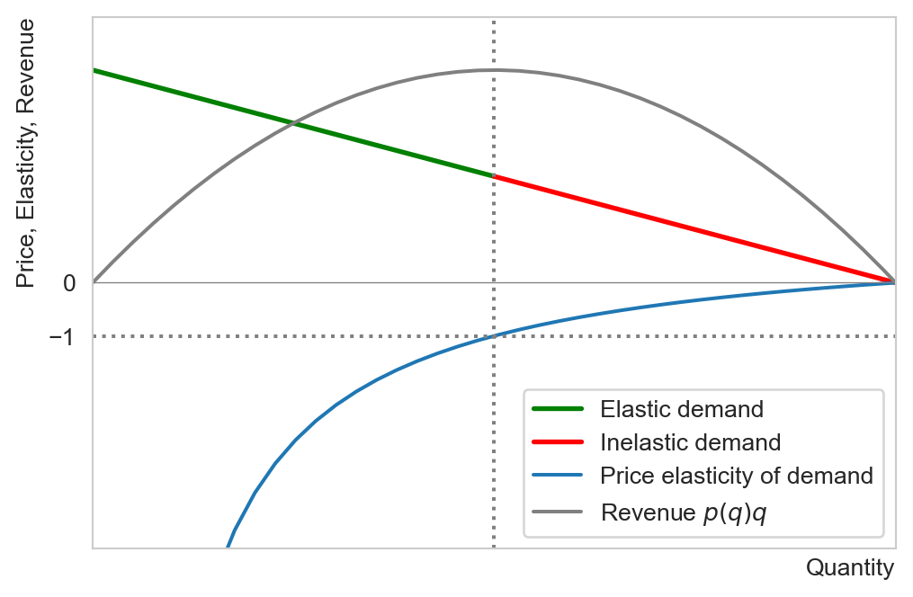
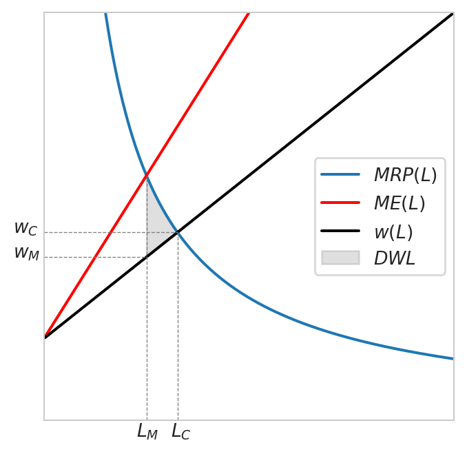

Chapter 4. Monopoly
1 Monopoly
1.1 What is a monopoly?
Unlike a competitive firm, who is a price-taker, a monopolist can determine the outpout level of the whole market and thus is a price-maker. A monopolist can choose any point on the demand curve: choosing the level of output is equivalent to choosing the price at which to sell the good.
A monopoly emerges due to barriers to entry such as:
- Structural barriers: such as cost advantage or demand advantage of incumbent firms
- Legal barriers: such as patents
- Strategic barriers: incumbent firms can engage in price wars (matching low prices of competitors) to build reputation as an aggressive competitor and deter entry
1.2 Profit maximizing problem (PMP)
Just as any other firm, the objective of the monopolist is to maximize profits. The quantity supplied in a monopoly is the solution to the monopolist’s PMP, which is:
\[ \max_q \pi = R(q) - C(q) = p(q) q - C(q), \]
where \(p(q)\) is the inverse demand function and \(C(q)\) is the firm’s total cost. Assuming differentiability, the FOC reads:
\[ \begin{aligned} \pi'(q) = p(q) + p'(q)q - C'(q) &= 0 \\ p(q) + p'(q)q &= C'(q) \\ MR(q) &= MC(q). \end{aligned} \tag{1}\]
At the profit maximizing output, the monopolist equalizes marginal revenue (MR) and marginal cost (MC).
In order for the FOC to be sufficient, the SOC needs to be verified, i.e.,
\[ \pi''(q) = MR'(q) - MC'(q) \leq 0, \]
meaning that the slope of the marginal cost curve is greater or equal to that of the marginal revenue curve. This condition is clearly satisfied in the case of downward sloping MR and upward sloping MC (convex cost function).
If the SOC then the profit maximizing output is such that \(MR(q) = MC(q)\) since:
- If \(MR(q) > MC(q)\), raising output increases profits
- If \(MR(q) < MC(q)\), raising output hurts profits
1.3 Monopolistic outcomes
Recall that for a price-taker, the marginal revenue is the market price. For a monopolist, this is no longer true since the monopolist influences the market price via their output level. In particular, in a monopoly, MR is less than the market price whenever the law of demand holds (decreasing demand curve): \[ MR(q) = p(q) + p'(q)q < p(q). \tag{2}\]
Hence as output increases, there are two opposing forces acting on the firm’s revenue. On the one hand, selling one additional unit yields an additional revenue equal to the price \(p(q)\). On the other hand, higher supply depresses the price of the good since the demand curve is downward sloping.
Marginal revenue being less than the price implies that graphically the MR curve lies below the demand curve. Notice that the MR curve and the demand curves originate at the same height since \(MR(0) = p(0).\) This is the highest price anyone is willing to pay for the good (the maximum willingness to pay or reservation price).
Example 1 Consider the linear inverse demand function \(p(q) = a - bq\) where \(a, b > 0\). The marginal revenue is \(RM(q) = R'(q) = a - 2bq,\) which is twice as steep as the demand curve but originates at the same point \((0,a)\) as the demand curve. Suppose the market is a monopoly and the monopolist has constant marginal cost \(MC(q)=c,\) then monopolist maximizes profits by selling \(q=\frac{a-c}{2b}\) at the price \(p=\frac{a+c}{2}\). Observe that \(a\) measures the highest reservation price, if \(a < c\) the market would cease to exist.
1.4 Common misunderstandings of monopoly
1.4.1 The monopolist can set infinitely high prices
Being the only firm in the market, the monopolist has market power, but this does not mean it can set any price. Indeed, monopoly prices depend on the market demand, which is the aggegration of consumers’ demand, as we saw previously. The price and quantity combination of the monopolist is constrained by the market demand curve. Since the demand curve is in general downward sloping, in general it is not optimal for the monopolist to set prices as high as possible since as prices increase, the quantity demanded declines.
1.4.2 The monopolist has a supply curve
The monopolist does not have a supply curve since it is a price maker. Indeed, recall that the supply curve is constructed by associating each given price with a quantity that firms are willing to produce. In a monopoly there is no given price: for a monopolist, deciding how much to produce is equivalent to choosing at which price to sell; the two are determined simulatenously via the demand curve.
1.4.3 The monopolist operates in the inelastic portion of the demand curve
Monopolies tend to emerge in markets with few or no close substitutes where demands are relatively inelastic. It is thus tempting to think that monopolists operate on the part of the demand curve where consumers are most insensitive to a variation in price But this might not be profit maximizing. Suppose the firm is operating on the inelastic portion of the demand curve, this means that price-elasticity of demand is less than one (in absolute value). By reducing the price by 1%, the monopolist increases sales by more than 1% thereby increasing revenues. It will then have incentives to raise output (reduce prices) so long as it is on the inelastic part of the demand curve.

2 The Lerner index and the inverse elasticity pricing rule
2.1 Lerner index
The Lerner index is the ratio between the markup (difference between the price and the marginal cost) and the price. It is thus also known as the markup index.
\[ \frac{p - MC(q)}{p}. \tag{3}\]
Observe that for any perfectly competitive firm, the Lerner index is zero.
Recall that the price-elasticity of demand for any price variation (not just small ones) is: \[ \epsilon_{p,q} = \frac{\%\Delta q}{\%\Delta p}\frac{p}{q} \implies \frac{1}{\epsilon_{p,q}} = \frac{\%\Delta p}{\%\Delta q}\frac{q}{p}. \]
Hence for a small variation in quantity, we can write: \[ \frac{1}{\epsilon_{p,q}} = \frac{\partial p}{\partial q}\frac{q}{p}. \tag{4}\]
For a monopolist, since \(MC(q) = MR(q) = p(q) + p'(q)q\),
\[ \begin{aligned} \frac{p - MC(q)}{p} &= \frac{p(q) - p(q) - p'(q)q}{p(q)} \\ &=\frac{-p'(q)q}{p(q)} \\ &= -\frac{\partial p}{\partial q}\frac{q}{p} \\ &= - \frac{1}{\epsilon_{p,q}}. \end{aligned} \]
Therefore the monopoly Lerner index is: \[ \frac{p - MC(q)}{p} = - \frac{1}{\epsilon_{p,q}}. \tag{5}\]
Equation 5 tells us that a monopolist’s ability to set price above the marginal cost (as captured its Lerner index) is inversely related to the price-elasticity of demand:
- On more elastic portions of the demand curve, the Lerner index is small
- As demand becomes relatively inelastic, the Lerner index rises
Again, a high Lerner index in general does not imply higher profits. In particular, profits per sale are represented by the gap between the price and the average cost, not the marginal cost
Example 2 The Lerner index for a monopoly with constant marginal cost \(c\) and linear demand \(p(q)=a-bq\) is \(\frac{a-c}{a+c} < 1:\) the monopolist cannot have a markup over 100%.
Example 3 Consider again a monopolist with constant marginal cost \(c\) facing a constant elasticity demand function \(q(p)=ap^{-\epsilon},\) where \(a\) and \(\epsilon\) are strictly positive. The Lerner index in this market is \(1/\epsilon,\) indicating higher markup power for less elastic market.
2.2 Inverse elasticity pricing rule (IEPR)
The IEPR can be derived from the monopoly Lerner index (Equation 5):
\[ p = \frac{MC(q)}{1 + \frac{1}{\epsilon_{q,p}}}. \tag{6}\]
Example 4 Consider the constant elasticity demand function above. Suppose the monopolist faces a constant marginal cost of \(c\) as before. The monopoly price according to the IEPR is:
\[ p^M = \frac{c}{1 - \frac{1}{\epsilon}}, \] implying thatthat \(p^M > 0\) if and only if \(\epsilon > 1:\) the monopolist operates on an elastic portion of the demand curve.
3 Multipliant monopoly and cartel
A mulitpliant monopoly is a monopoly producing the same good in different factories (for example across the globe to cut costs). In each factory, the firm might face a different cost function.
Consider a monopolist producing the same good in two different plants (factories) and denote:
- \(q_i\) the output produced in plant \(i=\{1,2\}\)
- \(Q = \sum_i q_i\) the total output produced by the monopolist
The PMP is:
\[ \begin{aligned} \max_{q_1,q_2} \pi_1 + \pi_2 &= R_1(q_1, q_2) - C_1(q_1) + R_2(q_1, q_2) - C_2(q_1) \\ &= p(q_1, q_2)q_1 - C_1(q_1) + p(q_1, q_2)q_2 - C_2(q_1) \\ &= p(q_1, q_2)(1_1 + q_2) - C_1(q_1) - C_2(q_1). \end{aligned} \tag{7}\]
Differentiating w.r.t \(q_i\) yields:
\[ \begin{aligned} p(q_1, q_2) + \frac{\partial p}{\partial q_i}q_i &= \frac{\partial C_i(q_i)}{\partial q_i} \\ MR_i(q_1, q_2) &= MC_i(q_i), \quad i=1,2. \end{aligned} \tag{8}\]
Example 5 A cartel is a group of firms coordinating their production decisions to maximize joint profits.
A famous example of a cartel is the OPEC (Organization of Petrolium Exporting Countries). Some countries, such as Saudi Arabia have lower MC (cost of extracting an additional barrel of oil) while others, such as Angola or Venezuela have higher MC. They coordinate on total output, i.e., agree on the quantity that each member produces, and redistribute joint profits.
Here is another cartel example in the automotive industry. In 2016, several major European truck manufacturers, including Daimler, Volvo/Renault, Iveco, and DAF, were fined by the European Commission for forming a cartel. These companies had colluded for 14 years to fix prices and delay the introduction of more environmentally friendly truck models. The fines totaled over €2.9 billion, making it one of the largest cartel fines in history.
4 Impacts on welfare
The following table sums up the impact on welfare of monopolies compared to more competitive markets
| Consumer Surplus | Lower |
| Producer Surplus | Higher |
| Dead weight loss (DWL) | Higher for monopolies with a unique price |

Figure 5 shows the impact of price-elasticity of demand on the magnitidue of the dead weight loss due to monpoly. The more elastic is the demand curve, the smaller the DWL appears to be. This is because a higher price-elasticity of demand reduces the markup potential of the monopolist, resulting in an outcome that is closer to the perfectly competitive one. In Exercise 2, you are asked to show the dependence of DWL on elasticity for the constant-elasticity demand case. Note that in general we can always write the DWL as:
\[ DWL = \int_{q_M}^{q_C} [p(q) - MC(q)] dq, \tag{9}\]
where \(q_M\) and \(q_C\) denote the monopoly and the competitve outputs, respectively.1
With some algebra we can show the following relationship for the constant-elasticity demand: \[ q_M = \left(1 - \frac{1}{\epsilon}\right)^{\frac{\epsilon}{1 + \epsilon}} q_C. \tag{10}\]
Observe that \(q_M \to q_C\) as \(\epsilon\to\infty,\) as we have remarked above.
Remark 1. It is also important to note that this relationship between the price-elasticity of demand and monopoly DWL does not typically apply to other types of DWL. For example, in the context of an excise tax, the distorsion caused by the tax (or the DWL) would be higher the flatter the demand curve. This is because consumers in a market with relatively more elastic demand, consumers have more alternatives which they can turn to rather than continuing to consume the good whose price has increased.
5 Regulation of monopolies
Monopolies cause a reduction in consumer welfare and a loss of market efficiency. It is a case of market failure. What can the government do to mitigate the consequences? In general it depends on the type of monopolies. A monopoly that arises and persists thanks to economies of scale (decreasing average cost) is called a natural monopoly.
If the monopoly is not a natural monopoly, i.e., if they maintain their dominant position by anticompetitive or restrictive practices (e.g., exclusive dealing, tying, bundling, predatory pricing, etc.), then the general public approach is to try and break them by using antitrust laws.
If it is a natural monopoly, then the government might attempt to regulate. Now the government faces a dilemma since it is more efficient for a single firm to serve the market thanks to economies of scale. For a natural monopoly the average cost is declining in output. Recall that for output levels for which the average cost is declining, the marginal cost is less than the average cost. If the government requires that the natural monopolist sets price equal to the marginal cost as if it were operating in a perfectly competitive market, it would incur a loss since this price would be below its average cost.
One public solution is to allow natural monopolists to charge different prices to different groups of customers (e.g., different electricity/water rates depending on whether customers are businesses or households) in such a way that the losses incurred would be offset by the positive profits.
6 Monopsony
6.1 What is a monopsony?
In contrast to a monopoly, in a monopsony, there is a single buyer and several sellers. The buyer will be able to pay less for each unit of the good than if it had to compete against other buyers.
Example 6 Examples of a monopsonies abound, spanning from the labor, retail, technology to the public sector.
Labor market: Large factories in remote areas in developing countries might be the sole buyer of labor in the region. These companies can exert significant control over wages and employment conditions.
Retail: Big supermarket chains such as Walmart (US), Carrefour (France) or Amazon (online) might have important negotiating power over suppliers when they are the dominant buyers of certain products.
Content platforms such as YouTube, Instagram or Spotify might have monopsonistic power over content creators
Public defense: In many countries, the government is the sole purchaser of military equipment and defense-related goods. Companies producing such goods often have to accept the terms and prices dictated by the government.
6.2 Modeling a monopsony
Consider a firm with production function \(q=f(L)\) which is twice differentiable, strictly increasing (\(f'>0\)) and strictly concave (\(f''<0\)) The firm faces only linear labor cost \(w(L)L\) and its profits are given by: \[ \pi = pq - w(L)L, \] where \(p\) is the price of the good produced by the firm
Note that \(w\) is increasing in \(L\): the higher demand for labor, the higher the wage. In other words, the firm is not a price-taker in the labor market: it has influences over the wage by deciding on the number of workers to hire.
The monopsonist’s PMP: \[ \max_{L\geq 0} \pi =pq - w(L)L = pf(L) - w(L)L. \]
Differentiating w.r.t \(L\) yields: \[ \pi'(L) = 0 \iff pf'(L) = w(L) + w'(L)L. \tag{11}\]
Observe that the LHS of Equation 11 represents the marginal revenue brought about but an additional worker (\(f'\) is the marginal output). It is often referred to as the marginal revenue product of labor (\(MRP\)).
The RHS of Equation 11 captures the marginal cost or the marginal expenditure on labor (\(ME\)). As the labor market becomes scarce, employing an additional worker raises the wage to \(w(L)\). The increased wage \(w'>0\) must be enjoyed by all the workers, which is captured by the second term. An analogy with the monopoly might help us remember these terms. In particular:
- \(w(L)\) to \(p(q)\): Supply to demand
- \(ME(L)\) to \(MR(q)\): Marginal expenditure to marginal revenue
- \(MRP(L)\) to \(MC(q)\). Marginal revenue product to marginal cost
Let us look at a numerical example.
Example 7 Consider a coal mine in a small town with production function \(q = 30\ln L\). The market for coal is a perfectly competitive one with price \(p=\$5\) per unit. The labor market where the mine operates has supply given by \(w(L) = 5 + \frac{1}{2}L.\) Determine the number of workers hired and the equilibrium wage in this market.
The monopsony’s PMP: \[ \pi(L) = 150\ln(L) - (5 + \frac{1}{2}L)L, \]
which is strictly concave in \(L.\) The necessary and sufficient condition for a max is: \[ \begin{aligned} \pi'(L) = 0 \iff \frac{150}{L} &= 5 + L \\ L^2 + 5L - 150 &= 0 \\ L &= 10. \end{aligned} \]
Hence the optimal number of hires is 26 for a wage rate of \(w(10) = \$10.\)
If the market were competitive, the firm would have taken the wage as given while soving its PMP. The condition for a max in this case would have been:
\[ \begin{aligned} pq'(L) &= w(L) \\ \frac{150}{L} &= 5 + \frac{1}{2}L \\ L &= -5 + \sqrt{325} \approx 13. \end{aligned} \]
The competitive wage would have been \(w(13)=11.5.\)

To conclude, we see that compared to a competitive buyer, the monopsonist buys a lower quantity at a lower price and this creates a dead weight loss in the market, as in the case of the monopoly.
7 Exercises
Exercise 1 Consider a market with a linear demand curve \(p(q) = a - bq,\) where \(a\) and \(b\) are strictly positive constants. Determine the range of quantities for which the demand curve is elastic or inelastic. Suppose the market is a monopoly and the monopolist faces a linear cost function \(C(q)=cq,\) what are the monopoly price and quantity? Does this quantity belong to the elastic or inelastic part of the demand curve?
Exercise 2 Consider a monopolist with linear marginal cost \(MC(q)=cq\) facing a constant elasticity demand function:
\[ q(p) = a p ^{-\epsilon} \quad a>0,\:\epsilon > 0. \]
Show that the monopoly output and price are given by: \[ \begin{aligned} q_M &= \left[\frac{\left(1 - 1/\epsilon\right)a^{1/\epsilon}}{c}\right]^{\frac{\epsilon}{1+\epsilon}}, \\ p_M &= \left(\frac{a}{q}\right)^{\frac{1}{\epsilon}}. \end{aligned} \tag{12}\]
Verify that the monopolist operates on an elastic portion of the demand curve
Compute the dead weight loss, how does it depend on \(\epsilon\)? Interpret.
Exercise 3 Consider a multipliant monopoly producing in two different plants, each of which has total cost: \(C_i(q_i) = a_i + b_i q_i + \frac{1}{2}c_i q_i^2\), where \(a_i, b_i, c_i>0\), \(i=\{1, 2\}\). The monopolist faces a linear demand curve given by \(p(Q) = A - Q\) with \(Q=q_1 + q_2\). Determine the output of each plant and their joint profits.
Footnotes
In the linear demand case above the DLW was the area of a triangle which we were about to compute without integration.↩︎